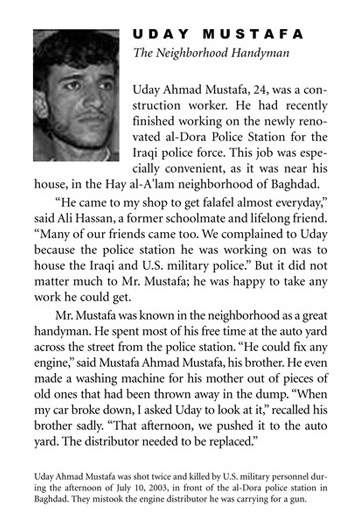
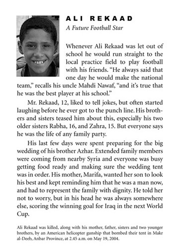
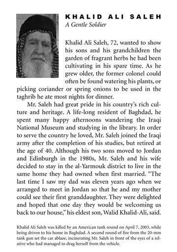
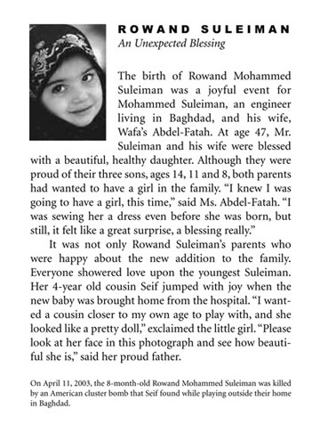

|
|
| Number 12: (In)efficacy | |
| Portraits of
Grief |
|
In the fall semester, 2005, students in Geoffrey Batchen’s seminar “Photography in the World” at CUNY Graduate Center organized an exhibition in conjunction with the symposium “Picturing Atrocity,” held at The Graduate Center on December 9, 2005. The challenges surrounding such an exhibition were both physical, as the location was limited to twenty five glass display cabinets lining the hallway next to the café “365 Express” on the ground floor, and theoretical, as one of the central questions became “How does one ‘picture’ atrocity in an exhibit format?” Rather than create an exhibition of “Atrocity Photographs,” the class decided to address the actual relationship of photography to atrocity. We did this by examining the way photographs are remembered and/or misremembered, as well as the way in which they are able or unable to account for actual atrocities. The exhibition was divided into two parts. The first section displayed a series of printed questionnaires that had been presented to individuals in the blocks in the immediate vicinity of The Graduate Center. The questionnaire asked whether the participant remembered the Abu Ghraib torture images and if so, could they describe them. In the questionnaires, the respondents displayed a wide demographic range and showed a similarly wide range of reactions to the images. Several of the people interviewed stated that they did not know the images at all. Some were outraged by them, while some shared no reaction. The second section of the exhibition addressed a particular atrocity resulting from the invasion of Iraq by the United States, by recreating the “Portraits of Grief” series produced by the New York Times after September 11, 2001. These new “portraits” were of Iraqi civilians who had been killed as a consequence of American military action in Iraq. The information used in the texts, including some of the photographs, was primarily gathered from websites and other sources accounting for civilian deaths throughout Iraq. As the “portraits” were intended to be part of a critical art project, borrowing from the rhetorical forms of the New York Times obituary as well as that of the photograph, the writers decided that biographical details could be invented and images borrowed when necessary to aid the project’s intention. Where the first section was displayed as a continuous stream of questionnaires, the second section displayed one portrait per cabinet, enlarged to poster size. In addition, quotes by authors Roland Barthes and Susan Sontag critically addressing the issue of atrocity were hung in a continuous banner across the lower section of the cabinets. These quotations helped to visually and thematically link the two parts of the exhibition: one that reflected a more academic study attuned to its scholarly setting, the other a critical commentary on the tragedy of loss in an atrocity in which every viewer was made complicit. Text by Karen Hellman




|